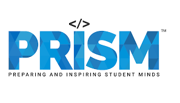
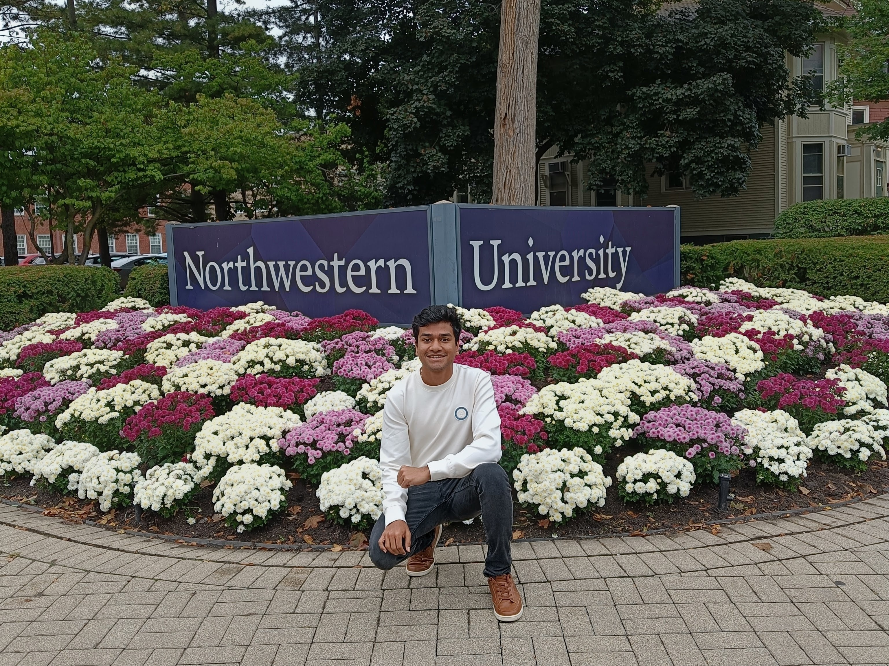

An Engineer
who specializes in
AI & Data Science
I'm an aspiring AI engineer who is passionate towards solving interdisciplinary problems while turning
complex data into intelligent, real-world systems.
When I'm AFK, I'm playing some sport or drinking way too much coffee.
I specialize in Python, Applied Machine learning and deep learning aimed at building scalable AI
products.
My Journey
A map of where I've been and where I'm going.
B.Tech at IITP
Dec 2021 - May 2025Majored in Engineering Physics. Grew a strong foundation in Math and Statistics. Explored domains from Mechanical Engineering to Computer Science. Grew my passion for Machine Learning & AI here.
SPARK IITR
May 2024 - Jul 2024Interned at IITR's Physics Department as a Summer Research Fellow. Worked on applying Machine Learning and Computer Vision techniques to automate defect analysis in Metal-Ceramic composites.
Samsung PRISM
Jul 2024 - Mar 2025Interned at Visual Intelligence Team (IITP) as part of SRI-B's PRISM program. Worked on developing efficient and scalable deep learning models for real time Thumbnail Selection on edge devices.


MSAI at Northwestern University
Sep 2025 - PresentCurrently exploring new opportunities in AI Engineering. Ready to tackle scalable machine learning challenges and build the next generation of intelligent products.
Want to see the full history?
I am currently open to new opportunities. Download my Resume to see my full experience, tech stack, and certifications.
Download Resume (PDF)